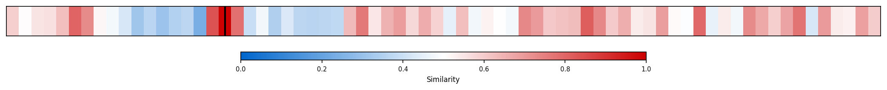
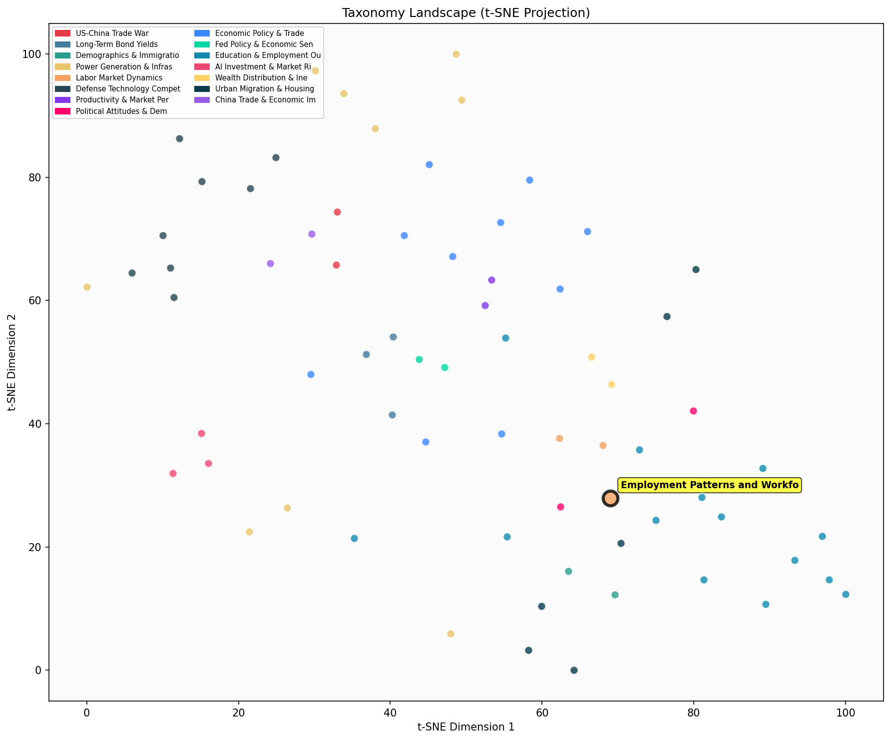

Description
This subcluster examines workforce participation rates, employment patterns, and labor force composition across different demographics and work arrangements. Articles analyze participation rates by age groups, particularly prime-age workers and older Americans, while tracking the rise of gig economy and flexible work arrangements. Common data sources include Bureau of Labor Statistics employment reports, demographic surveys, and industry-specific workforce studies. The focus spans traditional employment metrics, non-standard work patterns like ride-sharing and contract labor, and structural changes including automation impacts. Unlike its sibling subcluster on wage growth and earnings trends, this cluster emphasizes who participates in the labor market and how work arrangements are evolving, rather than compensation levels.
Similarity to All 70 Subclusters
Each cell represents a subcluster. Color intensity shows similarity (blue=low, red=high). Black line marks current subcluster position.
Relationship to Primary Clusters
Average similarity to each of the 15 primary clusters. Larger area = stronger relationship to that cluster.
Taxonomy Landscape
All 70 subclusters positioned by similarity (t-SNE). Current subcluster highlighted with label. Click to enlarge.
Network Connections
Current subcluster at center, connected to related subclusters. Line thickness = similarity strength.
Most Representative Articles
-
1. The aging US population has resulted in a shortfall of 1.9m workers since 2019, with a decline in LF
-
2. The aging of the American population has left the US short 1.9M workers relative to 2019. A decline
-
3. @GoldmanSachs reports a 2.85mm workforce decline: aging accounts for 700,000, early retirements for
-
4. The US labor force has expanded at a slower rate over the past two decades, contributing to a slowdo
-
5. .@HalScott_HLS argues the Federal Reserve failed to stem the on SVB by not serving as the lender of
Edge Cases (Boundary Articles)
-
1. NYC ride-share drivers can earn $72,000 annually from rides, with additional income from services liThis article is borderline because while it mentions ride-share driving as a work arrangement, it focuses primarily on specific income figures ($72,000-$75,000) rather than analyzing workforce participation patterns, employment trends, or labor force composition across demographics. The content is more about earnings potential in the gig economy rather than examining broader employment patterns or participation rates that define this cluster.
-
2. Kevin Corinth finds that childless, non-disabled, non-working adult Medicaid recipients aged 19–64 sThis article is borderline because while it touches on workforce participation by examining non-working adults, its primary focus is on Medicaid recipients' time use patterns rather than analyzing employment rates, labor force demographics, or workforce participation trends. The content is more aligned with welfare policy analysis and behavioral studies of benefit recipients than with traditional employment pattern research.
-
3. Amazon generated a $301bn consumer surplus in 2020, with only 7% or $21.3bn going to shareholders. EThis article is borderline because while it mentions employee compensation ($91bn), it primarily focuses on Amazon's financial value distribution and consumer surplus rather than analyzing workforce participation rates, employment patterns, or labor force demographics. The content is more aligned with corporate financial performance and value creation than with the systematic study of employment trends and workforce composition that defines this cluster.
Original Dendrogram